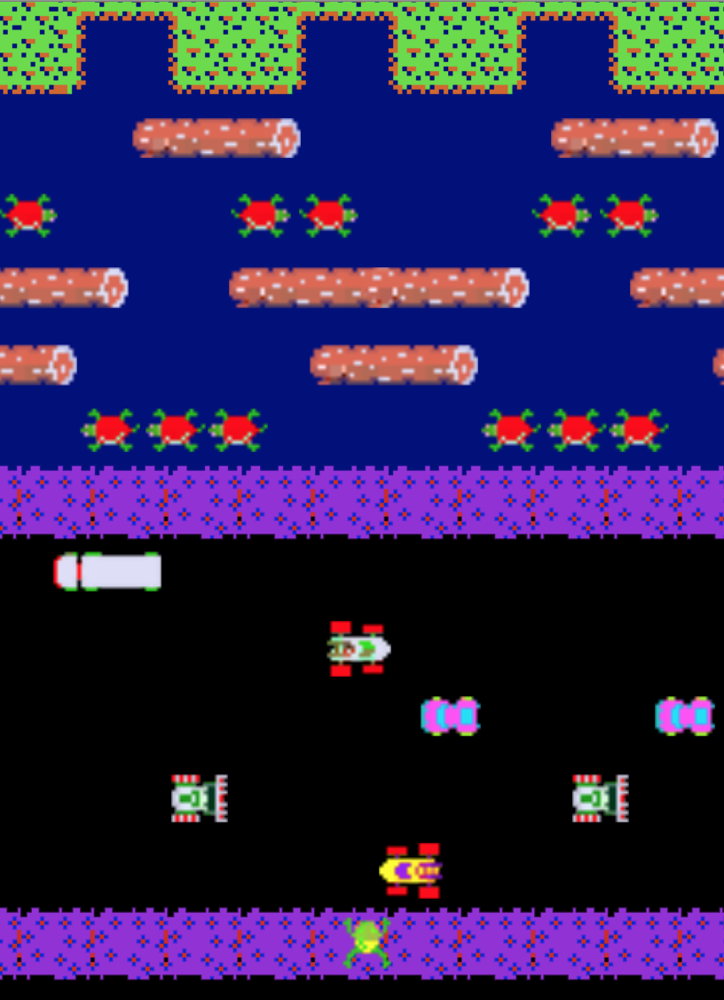
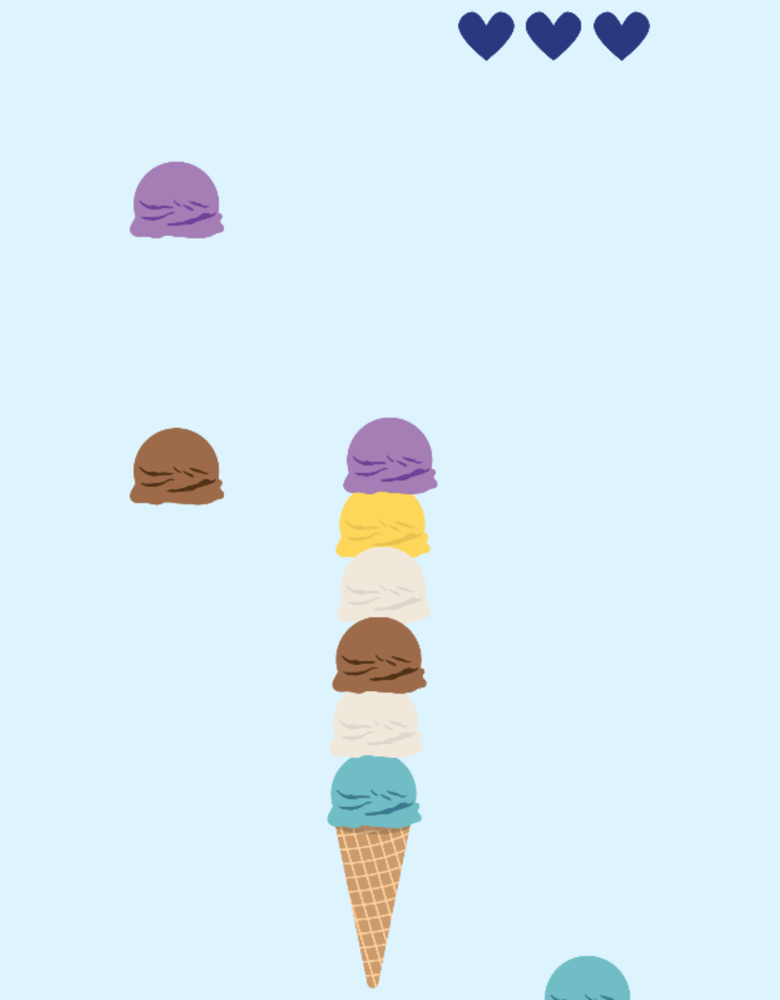

GAMES
I took Introduction to Game Development in my final semester. I had wanted to take it for two years before that, and when I finally got there I loved every second of it. Since then, I've been hooked on bringing my stories and art to life via video games.
Scroll up and down ⇉

Frogger
SPRING 2019
One of my first Unity projects ever was recreating the SEGA arcade classic Frogger. What you see is what you get: deadly cars, fast-moving logs, and turtles that sink underground when you least expect it.

Sundae Stacker
SPRING 2019
In my first attempt at mobile game design, I take the simple act of stacking ice cream scoops and give it a new personality, a la Candy Crush: nauseatingly sweet and strangely infuriating.